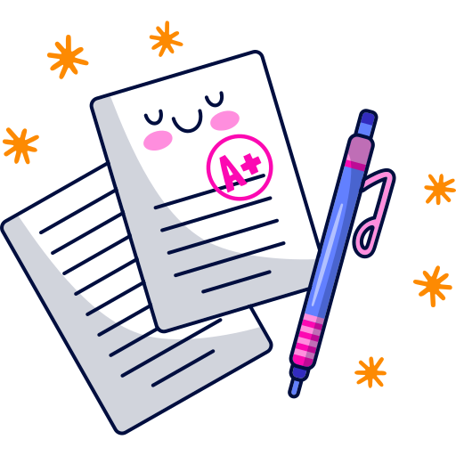

Organizzare
StudyBuddy ti accompagnerà dal primo giorno di lezioni fino all'ultimo esame mettendoti a disposizione tutti gli strumenti necessari a riuscire nell'impresa.

Ottimizzare
Con StudyBuddy, non dovrai mai preoccuparti di affannarti nella pianificazione dei tuoi compiti. Risparmierai tempo prezioso con un'interfaccia intuitiva che ti aiuterà a creare un piano di studio personalizzato. Una volta che hai finito di pianificare, StudyBuddy ti aiuterà a rimanere organizzato e concentrato sui tuoi obiettivi di apprendimento.

Motivare
Una componente importante di una buona sessione di studio è avere voglia di farlo, Studybuddy ti aiuterà anche in questo